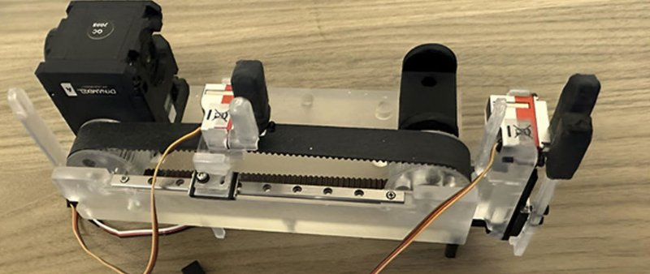

Academic bedside robots · nebraska_mohammadi2026
Haptic wire robot
Haptic portable guidewire robot

1 / 5


- Family
- Academic bedside robots (academic)
- Devices
- guidewire or catheter (standard tools)
- Degrees of freedom
- 2 (advance/retract, axial twist)
- Push
- Clamp relay
- Twist
- Rotating clamp
- Tested up to
- Bench
- Sim-to-real
- None found — No simulation-trained controller found for this robot.
Testing
- Highest level
- Bench
- What was tested
- flexible tubing with 20-80% stenosis inserts, 160 experiments (two current thresholds, rigid and flexible inserts)
- Key numbers
- 400 g; lesion stiffness F-score 0.83 / 0.77 / 0.95 (soft / medium / stiff); retractions rise with stenosis
Mechanism
- Push (translation)
- clamp-relay (servo-driven timing belt; gripper engaged on advance, released on retract)
- Twist (rotation)
- front servo plus twisting gripper (rack-and-pinion)
- Device range
- N.R.
- Target anatomy
- peripheral / prehospital use; bench stenosis tube
Sensing and interface
- Force sensing
- servo current only
- Leader and haptics
- current-based impedance control with virtual mass-spring-damper; autonomous mode
- Imaging
- N.R.
- Sterility
- N.R.
Size
- Footprint (mm)
- 160 x 75 x 90
- Mass (kg)
- 0.4
Simulation
- Simulation model
- none found
- Sim-trained controller
- none found
Versions
- Lineage
- medRxiv Feb 2026; Ann Biomed Eng 2026 (DOI 10.1007/s10439-026-04315-2)
Sources
- Haptic Portable Robotic Device for Automated Guidewire or Catheter Navigation in Endovascular Procedures · Annals of Biomedical Engineering, 2026 · doi:10.1007/s10439-026-04315-2 [mohammadi2026_haptic]
Notes
- Notes
- Autonomous rule-based controller, not learned.
This record
- Read level
- full
- Picture
- mohammadi2026_haptic Fig. 8(a) (Ann Biomed Eng version 10.1007/s10439-026-04315-2; embedded 1500x1917) ↗ — licence: CC BY 4.0; grade A
- Picture changes
- native extract; cropped inside the panel border; panel letter 'a' erased (LaMa, on wood, not touching the robot); 12 px trimmed at top-left; not upscaled
- Found by
- academic: Search of academic bedside robots.
- Data
- JSON · YAML:
records/robots/nebraska_mohammadi2026.yaml - Correction
- Suggest a correction [repository not created yet]